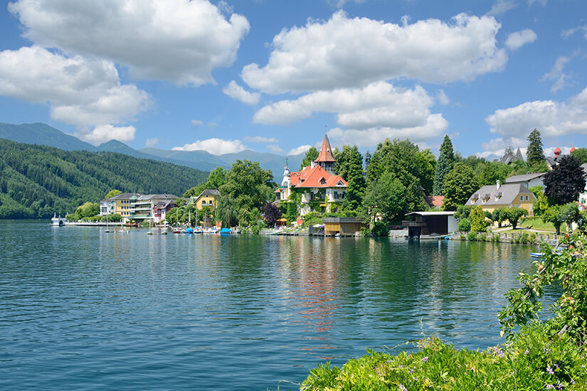

Millstätter See
Der Millstätter See ist der tiefste See Kärntens
und liegt im Herzen der Nockberge. Mit einer Fläche von etwa
13km² und einer maximalen Tiefe von 51 Metern bietet
er kristallklares Wasser und eine malerische Umgebung. Die Region rund
um den See ist bekannt für ihre vielfältigen Freizeitmöglichkeiten und ihre reiche Kulturgeschichte.
Öffentliche Badeplätze und freie Seezugänge
Entlang des Millstätter Sees gibt es mehrere öffentliche
Badeplätze und freie Seezugänge, die den direkten Zugang zum Wasser
ermöglichen. Hier sind einige empfehlenswerte Stellen:
-
Klauberpark in Seeboden: Direkt am Nordufer
gelegen, bietet dieser Park einen freien Seezugang mit Liegewiesen
und schattenspendenden Bäumen.
-
Parkplatz Tschall zwischen Seeboden
und Millstatt: Ein großer Parkplatz ermöglicht
den Zugang zum Seeufer, ideal für einen spontanen Badestopp.
-
Freier Seezugang zwischen Pesenthein und Dellach:
Ein kleiner Parkplatz an der Bundesstraße führt zu einem unverbauten Uferbereich, der zum Baden einlädt.
-
Südufer bei Charly's Seelounge in Döbriach: Etwa 1,5
Kilometer vom Lokal entfernt befindet sich ein freier Seezugang, der zu
Fuß oder mit dem Rad erreichbar ist.
-
Südufer bei Großegg: Direkt am Millstätter
See Radweg gelegen, bietet dieser Zugang eine ruhige Badegelegenheit.
